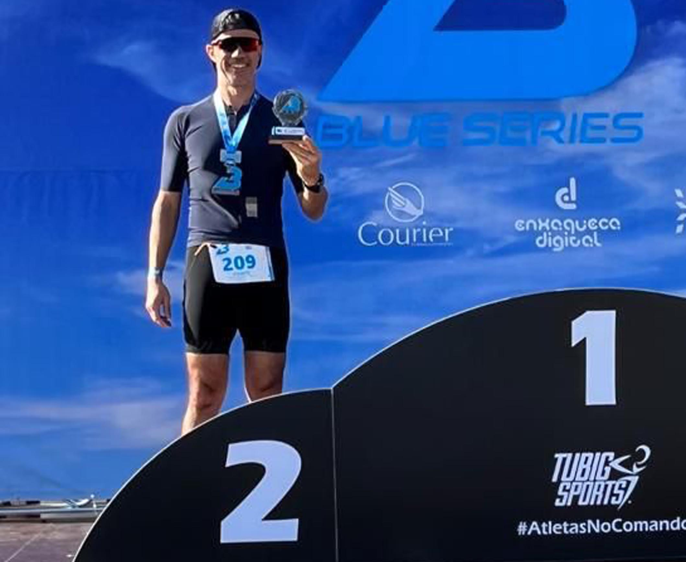
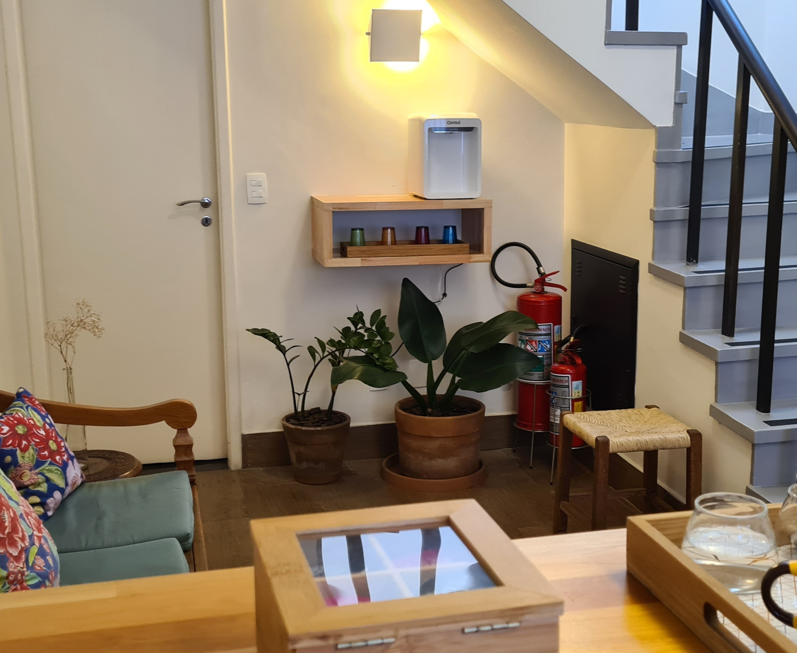
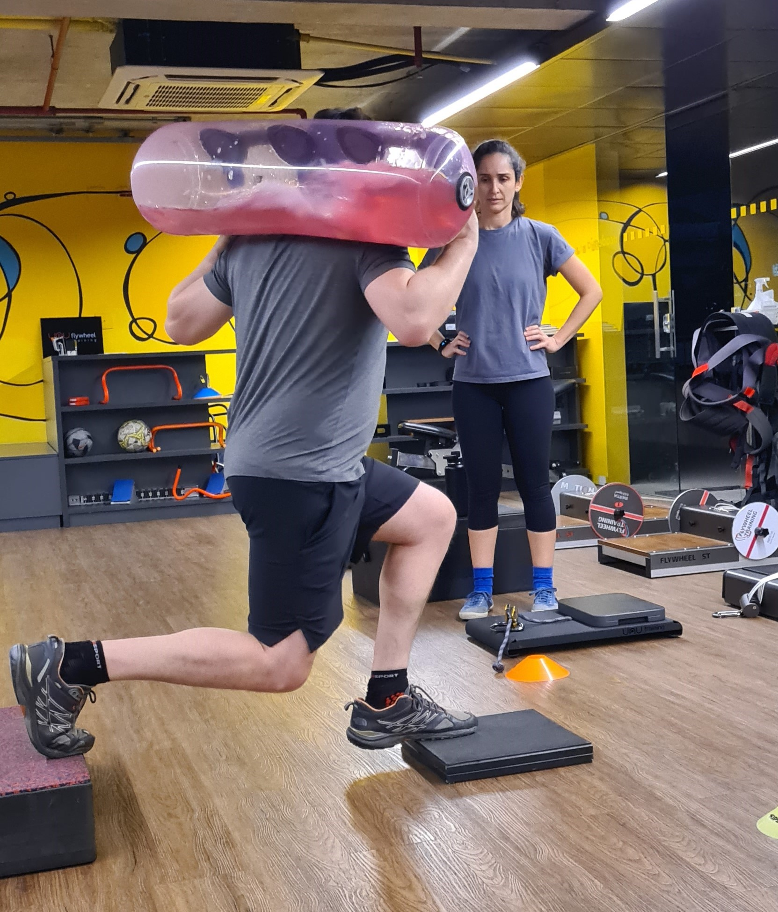
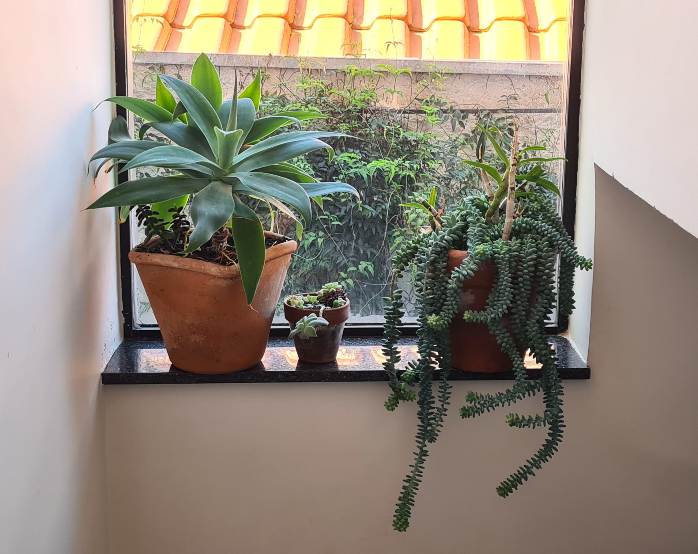
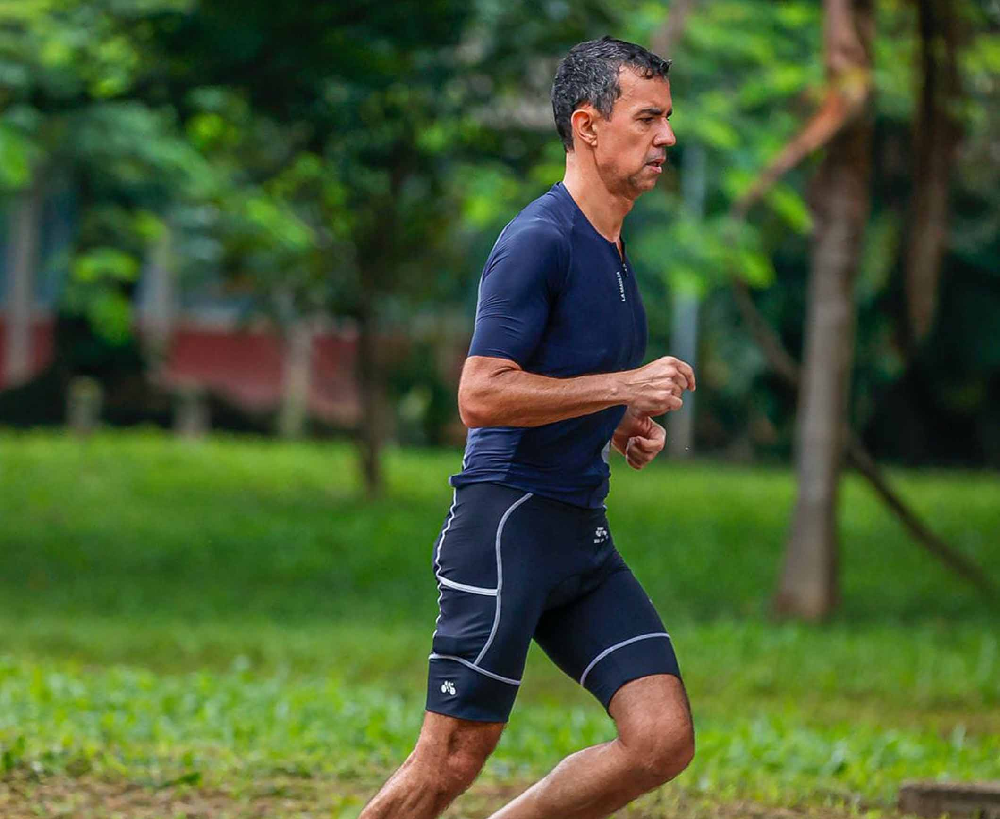
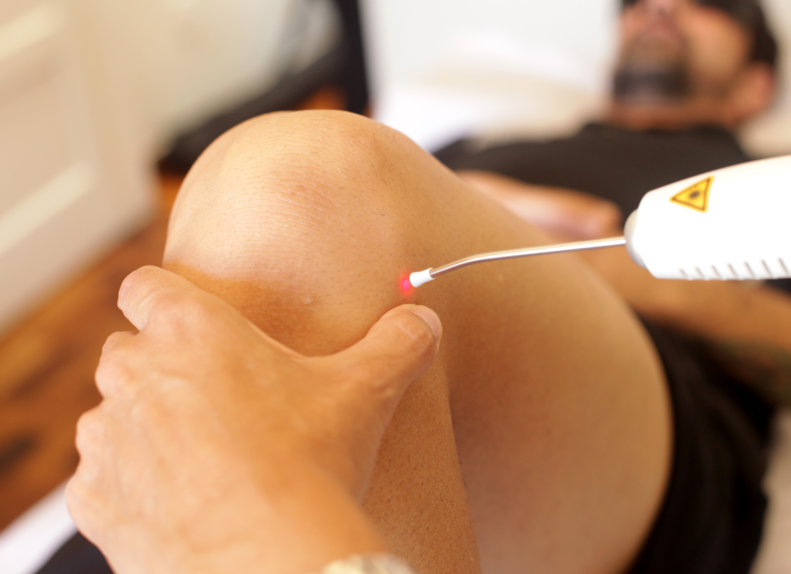

Abordagem integrada
Avaliar o corpo como um todo e perceber a inter-relação entre as disfunções significa tratar as causas e não somente a dor.
Como você usa o corpo importa
A postura tem relação com a maneira com que o corpo se organiza na gravidade. A morfologia, o histórico de atividade física e de lesões e o padrão postural imprimem uma marca na maneira como usamos o corpo.
Aprimorar a função e a performance
Treinar a sinergia e a cooperação entre as partes do corpo para realizar movimentos sintonizados garantem a transferência do treino.
12.08.2023
07.07.2023
20.06.2023
11.12.2020
12.03.2019